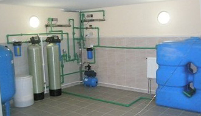

.webp)

Як виглядає і працює система зворотного осмосу
Багато хто чув термін «зворотний осмос», але мало хто уявляє, що за ним стоїть. Це не просто один фільтр, а повноцінний технологічний комплекс, який перетворює звичайну водопровідну воду на продукт еталонної чистоти.
Покроковий шлях води в системі Crystal Water
Перш ніж потрапити у вашу бутель, вода проходить через низку критичних етапів очищення:
1. Попередня фільтрація (Механіка)
На першому етапі вода проходить через поліпропіленові фільтри. Вони затримують пісок, іржу, окалину та інші великі частинки, які могли потрапити у воду з міських труб.
2. Сорбційний етап (Активоване вугілля)
Далі вода проходить через вугільні блоки. Вугілля працює як потужний хімічний фільтр: воно видаляє хлор, пестициди та органічні сполуки, які надають воді неприємного смаку та запаху.
3. Мембранний бар'єр (Серце осмосу)
/p>Це найважливіший етап. Вода під тиском проходить через напівпроникну мембрану з порами розміром 0,0001 мікрона. Усе, що більше за цей розмір (бактерії, віруси, солі жорсткості, важкі метали), відсікається та скидається, а крізь мембрану проходять лише молекули чистої води.
4. Фінальне коригування (Постфільтрація та мінералізація)
Щоб вода не була «дистилятом», вона проходить через мінералізатор, який повертає у воду суворо виважену кількість корисних елементів (кальцій, магній), роблячи її смак природним і приємним.
Чому промисловий осмос кращий за побутовий?
У Crystal Water ми використовуємо обладнання промислового класу. У чому різниця?
- Тиск. Промислові насоси забезпечують стабільний тиск, що гарантує максимальну ефективність мембрани.
- Контроль. Ми регулярно тестуємо кожну партію води, чого не може зробити власник домашнього фільтра.
- Обслуговування. Заміна мембран і фільтрів відбувається строго за регламентом, що виключає ризик «проскоку» забруднень.
Відчуйте різницю в кожному ковтку
Навіщо витрачати час на обслуговування фільтрів, якщо можна отримувати воду ідеальної чистоти з доставкою додому?
Замовити воду Crystal Water